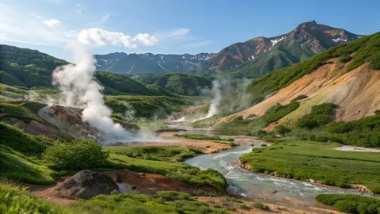
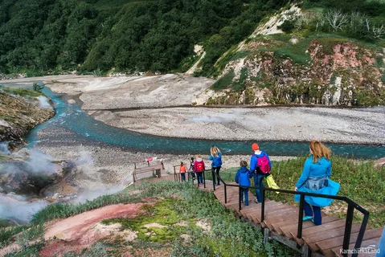
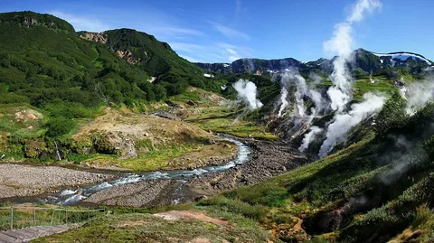

Маршрут проходит по Кроноцкому заповеднику — одному из самых труднодоступных мест планеты. Вы будете пробираться через высокогорные перевалы, пересекать термальные источники, пробираться по медвежьим тропам. Финал — Долина гейзеров, где из-под земли бьют десятки гейзеров, а земля парит. Это место называют "восьмым чудом света".
Только на вертолёте: Из Елизово (Петропавловск-Камчатский) организуются вертолётные туры в Кроноцкий заповедник. Самостоятельно добраться невозможно.
Обязательно: Зарегистрироваться в Кроноцком заповеднике и оформить разрешение. Маршрут возможен только в составе группы с гидом и продовольственным обеспечением.
Координаты старта: 54.1333° N, 159.9167° E